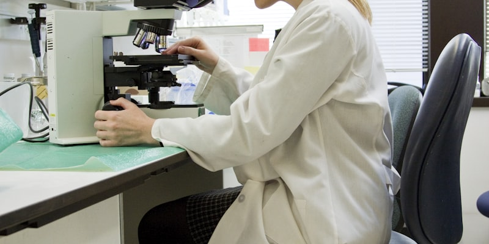

Generative AI
We develop generative models that reconstruct, enhance, and infer molecular profiles — turning sparse and incomplete measurements into rich, usable signal.
We develop generative and representation-learning methods that expand what spatial omics can measure, reconstruct, and reveal.
We sit at the intersection of artificial intelligence and the life sciences. We build intelligent tools that turn complex omics data into interpretable signals — and use them to uncover new biological insights.
We develop generative models that reconstruct, enhance, and infer molecular profiles — turning sparse and incomplete measurements into rich, usable signal.

We work across single-cell and spatial platforms to recover tissue architecture, cell-cell interactions, and 3D molecular context at single-cell resolution.
We design computational pipelines and cross-modal inference methods that extract biological insight from complex, heterogeneous omics data.
Three principles guide everything we build.
Start from a real biological limitation; validate with independent evidence.
Test across tissues, platforms, and resolutions — not a single benchmark.
Release code, models, and data so results can be examined and extended.